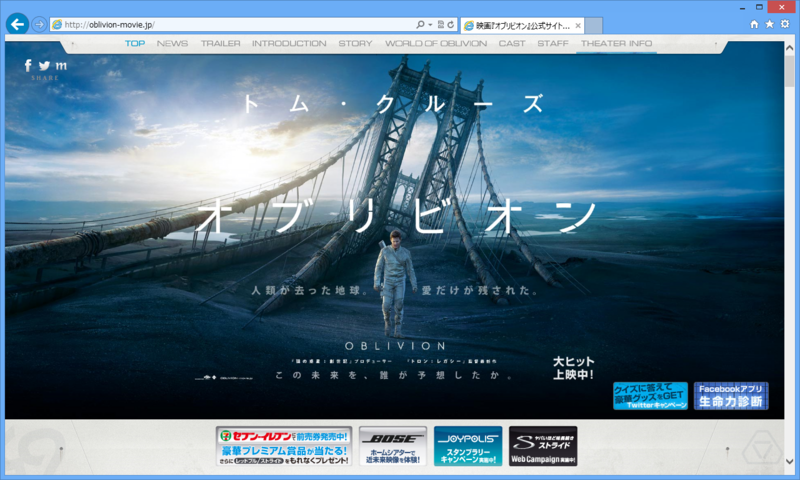
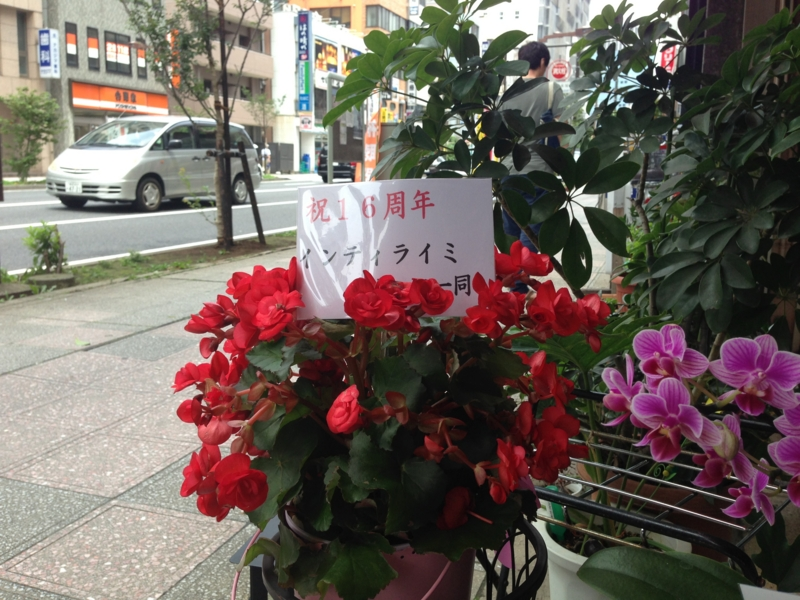
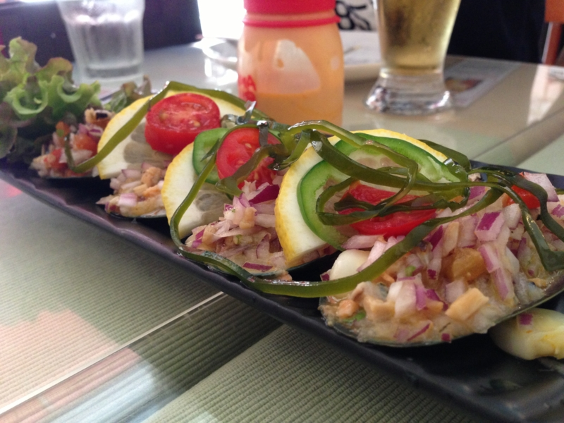
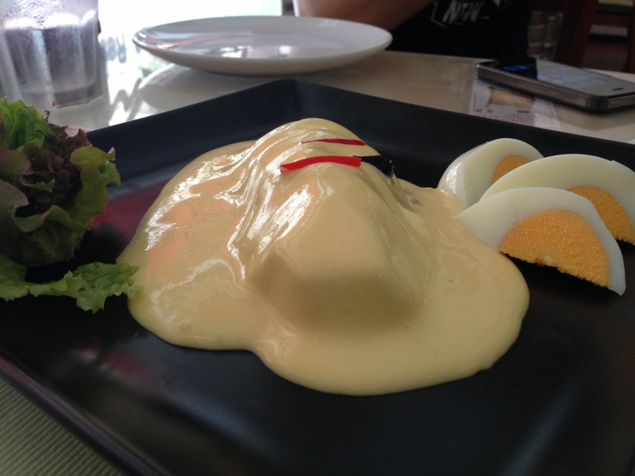
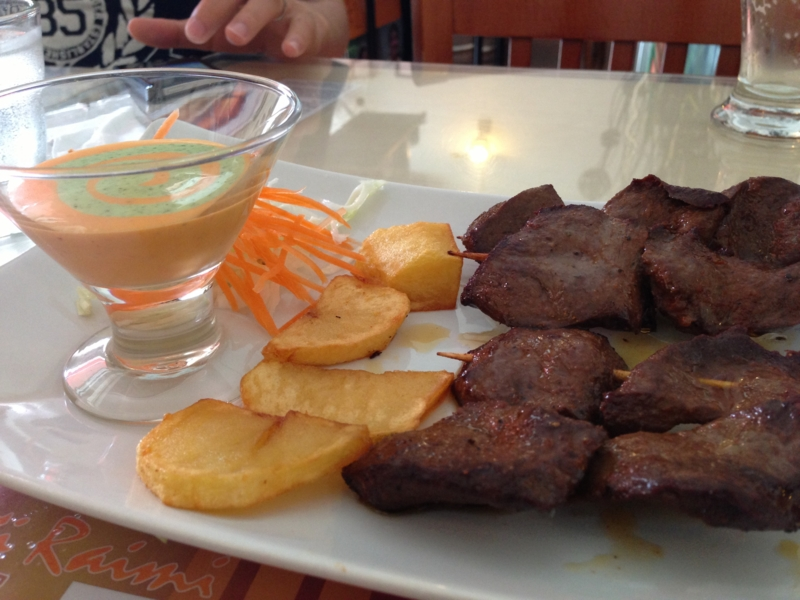

『オブリビオン』
公開日：

映画『オブリビオン』公式サイト 5月31日（金）ロードショー
本当は『攻殻機動隊ARISE -GHOST IN THE SHELL-』が観たかったのだけど、上映時間が59分しかないらしい。四部作であるということも、少し躊躇させられた。全部観に行けるかわからなかったし*1、どうせあとで4部作を連続上映したりするんだろうって気もした。
というわけで、今回は『オブリビオン』をチョイスした。
感想は……まぁまぁ、おもしろかった。ちょっと『マトリックス』っぽさのある“地球絶滅後の世界”系フィクションになるのかな。ツッコミどころ満載だけど、それも含めて楽しめるというか。映画代を無駄にした感じはなかった。
あと、ちょっと上映時間が長かったのだけどチネチッタ（http://lacittadella.co.jp/）のシートは結構フカフカしていて、お尻がぜんぜん痛くならなかった。これははありがたいのぉ。

そのあとは、ペルー料理屋さん『インティ ライミ』でお昼ご飯。

どっちかっていうと素朴な味付けだけど、結構おいしいので、気に入ってたまに通っている。
*1:結局、『ベルセルク』は最終篇を見逃した